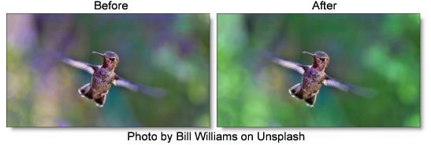

Color Spot
Description
Tints the image using presets for common photographic filters except for a center spot which retains normal color. The center spot can be moved, sized and the amount of blur can be controlled.
Category
Grads/Tints.
Controls
Presets
To select a preset, pick one from the Presets window.
Color
Color
The Color parameter sets the color through the use of a standard color picker.
Opacity
Sets the opacity of the color filter.
Preserve Highlights
Preserves the white areas of the image.
Exposure Compensation
Exposure Compensation adds back the brightness loss as a result of the filter application.
Spot
A spot in the form of a radial gradient is used to control where color is added to the image. Go to the
Spot section of Common Filter Controls to see how the Spot controls work.